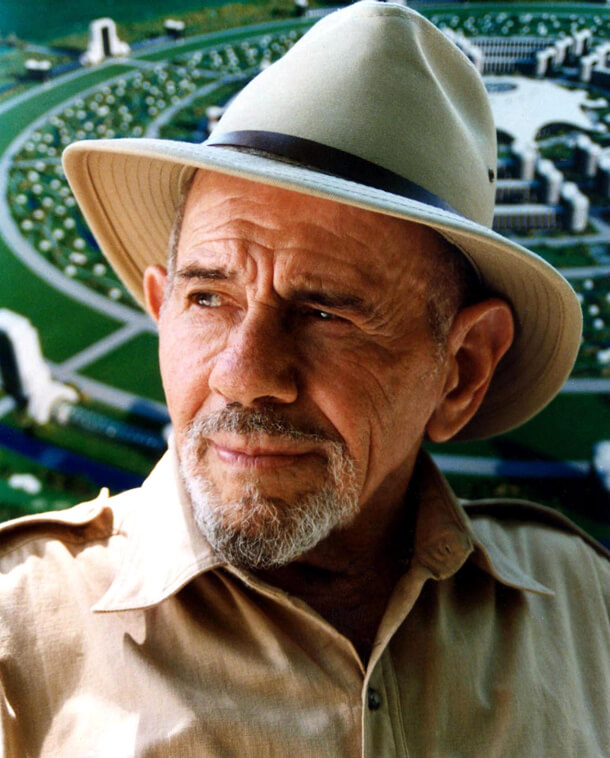

The most well-known portrait of Jacque Fresco
The following list is a timeline of Jacque Fresco
- 1916 - Born in Manhattan, New York, U.S.
- 1930 - Fresco left home and started hitchhiking and "jumping" trains.
- 1931 - Fresco met Albert Einstein, a conversation with which Jacques remembered for a lifetime.
- 1934 - Fresco began to engage in design at a professional level.
- 1939 - He worked at Douglas Aircraft Company in California. He presented designs including a flying wing and a disk-shaped aircraft.
- 1942 - Fresco was drafted into the United States Army.
- 1948 - Fresco was commissioned by Earl "Madman" Muntz, to design low cost housing.
- 1949 - He created and was director of Scientific Research Laboratories in Los Angeles.
- 1955 - Fresco left California after his laboratory was removed to build the Golden State Freeway.
- 1955 - He moved to Miami, Florida. He opened a business as a psychological consultant.
- 1955-1969 Fresco worked on his social ideas, named them "Project Americana".
- 1969 - The book "Looking Forward" was published.
- 1994 - Fresco with his partner Roxanne Meadows, supported the Venus Project.
- 2002 - The book "The Best That Money Can't Buy" was published.
- 2016 - Jacque Fresco received a Novus Summit award for City Design/Community.
- 2017 - Fresco died on May 18, in his sleep at his home in Sebring, Florida, from complications of Parkinson's disease at the age of 101.